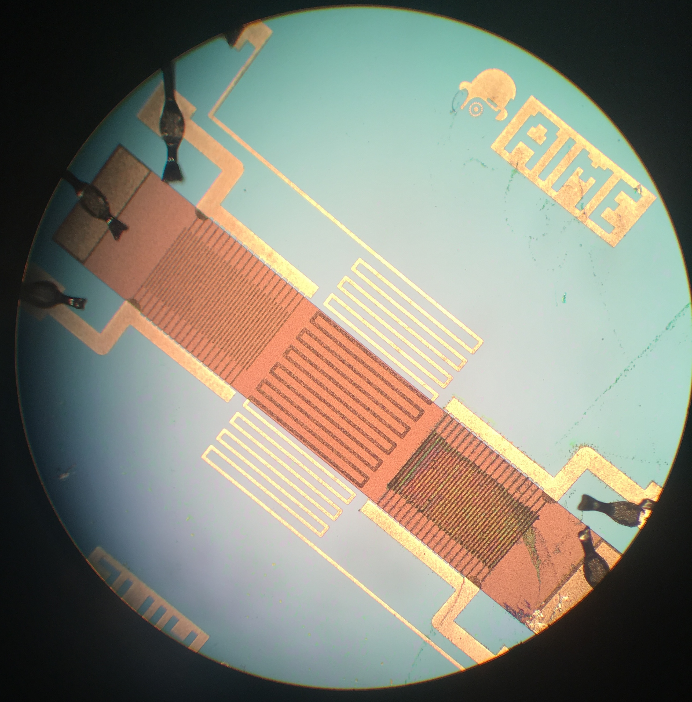
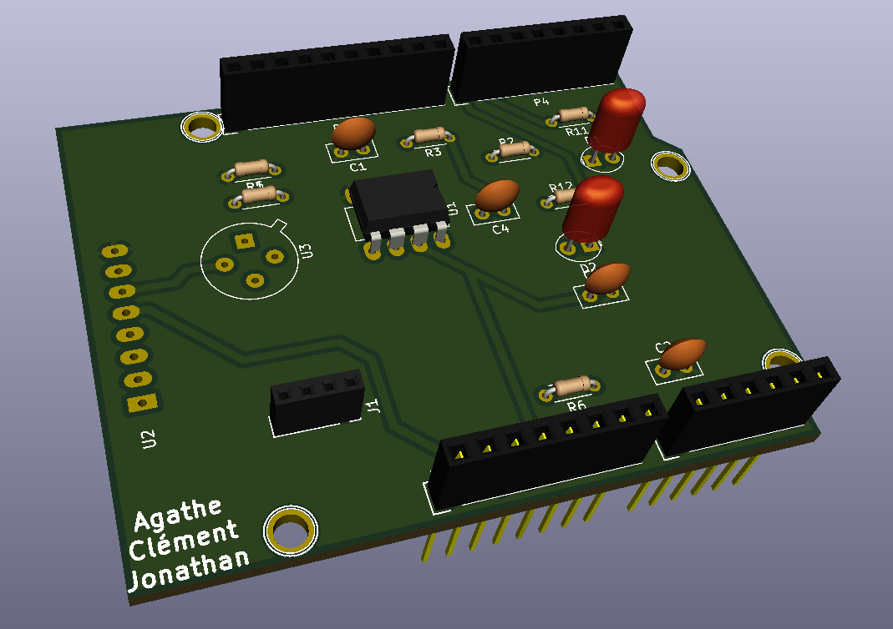
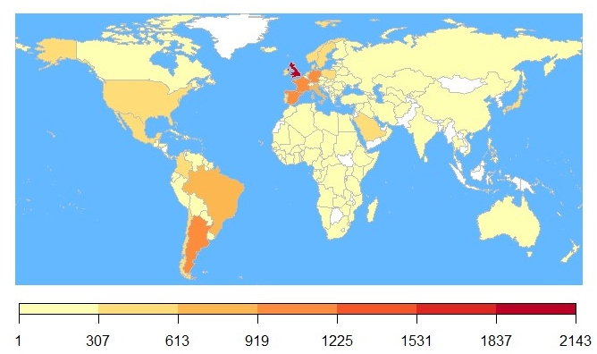

Tableau des enseignements
Cette nouvelle partie reprend le tableau des généralités et permet d'accéder à une description des enseignements et des problèmes rencontrés dans chacun d'eux. J'y explique les solutions utilisées pour résoudre ces problèmes et dresse un rapide bilan personnel.
Vous pouvez cliquer sur les titres pour atteindre la partie correspondante.
Dispositifs intelligents
Introduction aux capteurs
Présentation et travail effectué
Première partie : Lors de cet enseignement, nous avons pu apprendre les différentes familles de capteurs, certains éléments physiques liés à ces capteurs, leurs caractéristiques métrologiques et les montages conditionneurs associés. Finalement, nous avons appris comment concevoir une chaîne de mesure et avons effectué quelques exercices d’application.
Deuxième partie : Une partie de l’enseignement a été consacrée à un stage à l’AIME (salle blanche) pour concevoir un capteur de gaz à base de nanoparticules (technologie assez récente et non déployée à grande échelle pour le moment). Nous avons donc appris les différentes étapes de conception et avons testé notre capteur pour être capable de rédiger sa datasheet.
Vous pouvez d’ailleurs trouver cette datasheet au format pdf : Datasheet (pdf)
Problèmes et résolution
Problème : Comment créer un capteur à nanoparticules de manière optimale ?
Résolution du problème : Pour créer ce capteur, il faut d’abord obtenir un composant à partir d’une plaque de silicium en effectuant une photogravure. Il faut ensuite monter le composant. Finalement, il faut synthétiser chimiquement les nanoparticules et les déposer sur un peigne du composant (en le plaçant sous un champ magnétique).
On peut d’ailleurs observer ce dépôt sur la photo suivante où l’on voit bien que l’un des deux peignes a reçu les nanoparticules :

Connaissances et compétences mobilisées
J’avais déjà effectué un stage en salle blanche pour créer et tester des cellules photovoltaïques et j’ai revu quelques concepts abordés lors de cette première expérience (microscopes, tests électriques, fours, gravure avec résine, masques et rayons UV).
Les compétences concernées par cet enseignement sont :
- Comprendre les notions basiques des capteurs et des chaînes d'acquisition: du point de vue physique, électronique et de la métrologie
- Etre capable de fabriquer un capteur à nano-particules en utilisant des outils de micro-électronique: synthèse chimique, assemblage et test
- Etre capable de concevoir la datasheet du capteur fabriqué
Synthèse et bilan
Cette partie fut très bénéfique car elle permet de comprendre les "dessous" d’un capteur. Nous avons pour habitude de les utiliser déjà construits, il est donc pertinent de se demander comment il est possible de parvenir à un tel résultat.
J’ai vraiment apprécié l’ensemble de cet enseignement qui a permis de revoir de nombreuses notions électroniques, physiques et chimiques.
Microcontrôleurs & Hardware Open-Source
Présentation et travail effectué
Durant ce module, nous avons tout d’abord suivis des cours sur les microcontrôleurs pour apprendre à les utiliser (syntaxe du langage de programmation Arduino, schémas d’interfaces pour divers actionneurs et capteurs comme un écran tactile, création de bibliothèques, utilisation d’Android comme interface).
Nous avons ensuite suivi des cours sur Github (pour déposer notre conception logicielle de manière sure et propre), puis sur KiCad, pour être capable de développer un shield nécessaire à l’utilisation d’un capteur de gaz.
J’ai ensuite décidé d’effectuer le mini-projet en autonomie plutôt que d’effectuer les TP d’apprentissage car j’avais déjà quelques connaissances en Arduino et je souhaitais les améliorer. Ce mini-projet concerne la conception d’un ensemble intelligent connecté : un capteur de gaz connecté via LoRa utilisant un capteur de gaz, un microcontrôleur Arduino et une antenne LoRa.
La présentation complète, mes fonctions dans ce projet ainsi que les différents problèmes et solutions rencontrés sont disponibles dans la partie descriptive : Lien vers projet
Voici une capture de la visualisation 3D du shield conçu pour exposer mes propos :

Connaissances et compétences mobilisées
Durant ce cours, j’ai pu utiliser certaines connaissances que j’avais acquises durant ma 4ème année en utilisant des microcontrôleurs Arduino ainsi que mes connaissances en électronique pour la conception d’un shield.
Les compétences correspondantes sont :
- Comprendre l'architecture des microcontrôleurs et comment les utiliser
- Etre capable de concevoir la chaîne d'acquisition (capteur, conditionneur, microcontrôleur) en fonction de l'application
- Etre capable de concevoir le circuit électronique du conditionnement du signal du capteur (conception et simulation)
- Etre capable de concevoir un shield pour interfacer le capteur de gaz
- Etre capable de combiner tous les composants mentionnés ci-dessus dans un dispositif intelligent
- Etre capable de concevoir le logiciel nécessaire à l'utilisation du capteur de gaz et son IHM
Synthèse et bilan
Pour conclure, j’ai vraiment apprécié cet enseignement et son format qui permettait d’avancer sur notre projet tout en suivant le cours correspondant. J’ai, pour la première fois, réalisé une carte électronique grâce à un logiciel, à partir d’un schéma électrique. J’ai aussi pu découvrir Node-Red que nous avons réutilisé lors de l’enseignement OM2M.
Communication
Protocoles et communication
Cet enseignement est présenté de manière différente car il reprend 4 parties distinctes.
Protocoles pour les objets connectés
● Dans cet enseignement, nous avons étudié les différents types de protocoles : NB-IoT, LoRa, ZigBee, Sigfox and BLE. J’ai d’ailleurs effectué un travail de recherche et de présentation sur le protocole Nb-IoT.
Voici le rapport et la présentation : Rapport (pdf)Présentation (pdf)
● Dans un second temps, nous avons étudié la couche MAC dans les protocoles et ses différents types.
Voici mon rapport concernant cette couche et mes recherches : Rapport (pdf)
● Dans un troisième temps, nous avons étudié la 5G dans plusieurs cas d’utilisation et j’ai plus particulièrement étudié le cas des villes connectées.
Voici d’ailleurs la présentation que nous avons réalisée : Présentation (pdf)
Communications numériques sans-fil pour les objets connectés
● Dans cet enseignement, nous avons tout d’abord travaillé sur les moyens de modulation, de démodulation et d’encodage de l’information. Ensuite nous avons réalisé un exercice pour comprendre les problèmes liés aux interférences dans les communications sans-fil.
Voici notre exercice sur les interférences : Exercice (pdf)
● Nous avons ensuite effectué des TP de SDR (software defined radio) où il s’agissait d’utiliser un système transmetteur-récepteur RF et de réaliser un traitement du signal.
Voici le rapport correspondant : Rapport (pdf)
Energie pour les objets connectés
Dans cet enseignement, nous avons étudié les notions de sources, de transferts et de récupération d’énergie. J’avais déjà certaines connaissances en énergie du fait de mon orientation (Automatique Electronique, systèmes embarqués).
Pour les moyens de stockage, par exemple, nous avons pu étudier les piles, accumulateurs et supercondensateurs. Cela a été utile pour notre projet intégrateur lors du choix d'un moyen de stockage pour le projet de la lampe.
Nous avons aussi vu les moyens de récupérations comme les panneaux solaires ou les thermogénérateurs. Nous sommes maintenant capable de choisir des sources d'énergie et des moyens de stockage de manière logique.
Réseaux émergeants (SDN, NGN)
Pour l’IoT et de manière générale, de nouveaux réseaux ont fait leur apparition, notamment les Software Defined Networks. J’ai utilisé ce type de réseau durant mon stage de 4ème année en Afrique du Sud et avais donc quelques bases dans le domaine.
Nous avons effectué deux TP pour cet enseignement. Ils consistaient à mettre en place un réseau SDN basé sur OpenFlow. Le langage utilisé a été Python pour déployer un contrôleur.
Synthèse et bilan
Pour conclure, ce module est un module assez lourd en terme de connaissances, de cours, de travaux pratiques et de recherches. Il y a beaucoup d'informations à assimiler et il faut parfois bien se renseigner pour comprendre certaines notions (notamment la couche MAC).
Cependant, le module est bien entendu une partie fondamentale de l'IoT et de notre choix de parcours, et voir autant de notions permet d'obtenir des connaissances dans tous les domaines, de manière complète.
Sécurité pour les réseaux d'objets connectés
Présentation
L’enseignement de sécurité permet de comprendre l’impact d’une sécurité informatique négligée. Nous voyons les différentes possibilités d’attaques qui peuvent survenir et les conséquences qu’elles peuvent avoir à de nombreux niveaux (matériel, financier, humain). Nous avons également les mesures qui permettent d’éviter les failles de sécurité.
En effet, aujourd’hui, les problématiques de sécurité dans les réseaux connectés sont nombreuses : confidentialité, intégrité et disponibilité des données.
Connaissances et compétences mobilisées
Cette partie m’a permis d’acquérir certaines compétences :
- Comprendre les fondamentaux de la sécurité
- Etre capable d'identifier les faiblesses de sécurité dans une architecture IoT
- Etre capable de comprendre l'impact de l'exploitation d'une vulnérabilité dans la sécurité d'une architecture IoT
- Etre capable de proposer des contre-mesures de sécurité adéquates
Synthèse et bilan
Pour un semestre complet dans le monde de l’IoT, il est important d’aborder une des notions les plus importantes du monde actuel qu’est la sécurité. Ce cours permet de passer en revue les problèmes et solutions que l’on peut apporter et est à bien retenir pour notre avenir dans ce domaine.
Intergiciel et Service
Architecture de Service
Présentation et travail effectué
Ce module nous a présenté les architectures de service (Service oriented architecture SOA), une architecture où les services sont fournis à des composants par le biais d’applications.
L’enseignement a ensuite été divisé en deux parties : les TD d’un côté et un projet d’automatisation des salles du GEI de l’autre.
La présentation complète, mes fonctions dans ce projet ainsi que les différents problèmes et solutions rencontrés sont disponibles dans la partie descriptive : Lien vers projet
Concernant les TD, nous avons découverts de nombreux outils et notions. Nous avons configuré un serveur Tomcat, mis en place l’environnement Eclipse (avec Apache Axis,…), travaillé sur les langages WSDL (services web) et BPEL (orchestration), et travaillé sur des architectures REST ainsi que sur le protocole SOAP (en bottom-up ou top-down).
Connaissances et compétences mobilisées
La seule notion que j’avais abordé auparavant était l’architecture REST lors de mon projet tutoré de 4ème année et du cours intergiciel durant ce semestre.
Dans ce module, j’ai pu apprendre à déployer des services web (SOAP et REST) qui utilisaient Eclipse EE avec le conteneur TomCat et le moteur Apache Axis2.
Les compétences de la matrice visées étaient :
- Savoir définir une Architecture Orientée Services (SOA)
- Déployer une SOA avec des services web
- Déployer et configurer une SOA utilisant SOAP
- Déployer et configurer une SOA utilisant REST
- Intégrer un gestionnaire de processus dans une SOA
Synthèse et bilan
Pour conclure, les cours et TD permettent de passer en revue la totalité des notions principales des architectures de service et sont très bien construits car ils nous guident dans la compréhension et l’application de ces notions.
Intergiciel pour l'Internet des Objets (IoT)
Présentation et travail effectué
De nombreux standards sont définis pour l’Internet des Objets, tant au niveau des protocoles de communication, que des différentes architectures que l’on peut retrouver. Un intergiciel est un logiciel qui se trouve entre un système d’exploitation et les applications exécutées sur cet OS, il permet donc de communiquer et de gérer les données dont les applications ont besoin.
OM2M est un logiciel open-source qui fait partie de cette famille des intergiciels et qui permet d’interconnecter des technologies hardware variées. En effet, il est basé sur le standard OneM2M qui est un standard pour plateforme horizontale.
La découverte d’OM2M s’est faite à travers un MOOC disponible sur OpenClassrooms mais j’avais déjà des connaissances certaines grâce à mon projet tutoré de 4ème année : Lien vers projet
Dans le cadre de ce cours, nous avions ensuite des TP à réaliser pour interconnecter des objets connectés (lampe HUE de Philips, par exemple). Nous avons également utilisé OM2M en simulant des capteurs par l’intermédiaire de programmes Java.
Problèmes et résolution
Les différents problèmes et solutions que nous avons pu rencontrer durant les TP sont bien définis dans le rapport.
Voici le lien pour accéder au rapport : Rapport (pdf)
Connaissances et compétences mobilisées
Mes connaissances sur le standard OneM2M et le logiciel OM2M étaient déjà en partie développées (architecture REST, utiliser l’outil Postman pour effectuer des requêtes) mais j’ai pu m’améliorer en apprenant à utiliser un client REST codé en Java, et en développant un serveur proxy d’interconnexion pour intégrer de nouvelles technologies (capteurs,…) à l’architecture OM2M.
Finalement, j’ai pu découvrir oBIX et JAXB qui permettent de coder et décoder des objets pour faciliter la communication de ceux-ci, c’est le XML Mapping.
Les compétences acquises sont donc :
- Savoir comment situer les principaux standards de l'IoT
- Déployer une architecture conforme à un standard de l'IoT et implémenter un réseau de capteurs
- Déployer et configurer une architecture IoT utilisant OM2M
- Intéragir avec les différentes ressources de l'architecture en utilisant des services REST
- Intégrer une nouvelle technologie dans l'architecture déployée
Synthèse et bilan
Pour conclure, grâce à cet enseignement j’ai pu découvrir la nécessité d’un standard open-source pour le monde de l’IoT. J’ai d’ailleurs pu réutiliser OM2M lors de divers projets (Hackathon, architecture de service, projet tutoré), ce qui montre bien l’utilité d’une telle plateforme.
Adaptabilité: cloud et gestion autonomique
Présentation et travail effectué
Le cloud computing consiste à utiliser les serveurs informatiques distants par l’intermédiaire d’un réseau pour exploiter leur puissance de calcul et de stockage. Cette technologie est en plein développement depuis ces dernières années. Ce module a permis d’y voir un peu plus clair dans ce qu’il est possible de réaliser dans le cadre de cette matière.
Nous avons eu 5 séances de TP dont l’objectif était d’abord de comprendre le rôle des « hypervisors » et d’en implémenter, c’est-à-dire de configurer une image pour la déployer sur une machine virtuelle puis de superviser la création d’instances de machines virtuelles en fonction des ressources.
Nous avons ensuite utilisé un framework : Frameself, pour créer une plateforme cloud de manière autonomique (un service cloud de type PaaS, Platform as Service).
Problèmes et résolution
L’ensemble des soucis que nous avons rencontrés est disponible dans le rapport : Rapport (pdf)
Connaissances et compétences mobilisées
Je n’avais aucune connaissance préalable dans ce domaine si ce n’est quelques-unes sur les machines virtuelles. Voici donc les compétences que j’ai acquis :
- Comprendre le concept de cloud informatique
- Utiliser un service cloud du type IaaS
- Déployer et adapter une plateforme cloud pour l'IoT avec de l'informatique autonomique
- Déployer un PaaS basé sur OM2M
- Convertir un PaaS en un système autonomique
Synthèse et bilan
Comme pour la partie Architecture de Service de cette UF, il est dommage que les TP de cette matière arrivent si tard dans l’année et soient très rapprochés ce qui ne nous permet pas de prendre un assez grand recul sur ce module.
Je trouve cependant les TP bien réalisés et qui contiennent de nombreuses informations et connaissances à assimiler.
Analyse et Traitement de données, Applications professionnelles
Ingénierie logicielle
Présentation
L’ingénierie logicielle regroupe l’ensemble des étapes nécessaires à la conception et la mise en œuvre d’un logiciel. Le but de ce module était donc de nous faire comprendre le cycle de vie des projets logiciels, les différentes méthodes de gestion de ces projets et plus précisément la mise en œuvre de la méthode agile Scrum.
La participation à ces cours est très interactive car ce sont les étudiants qui font les recherches et l’enseignant qui complète les parties manquantes.
Rapide résumé du cours dispensé
Les différentes étapes du développement logiciel correspondent à :
- définir les objectifs
- analyser les besoins, trouver des solutions et étudier leur faisabilité
- définir le cahier des charges
- concevoir le logiciel et l’implémenter
- tester le logiciel et l’intégrer
- vérifier en suivant le cahier des charges
- créer de la documentation sur le logiciel
- distribuer le logiciel et mettre en place un "SAV"
Un des points les plus importants dans l’ingénierie logicielle est l’organisation du travail en équipe, qui doit apporter de la cohésion, de la communication et doit être bien encadré.
Concernant les méthodes de gestion de projet, voici un rapport sur les différentes méthodes de gestion de projet effectué pour préparer le cours correspondant : Rapport (pdf)
Utilisation de la méthode Scrum
Nous avons pu mettre en pratique la méthode Scrum à l’aide du logiciel de gestion de projet IceScrum. Cette méthode de gestion permet de produire du logiciel toutes les 3 à 4 semaines (= un sprint). Il faut définir les features (une partie du produit qui apporte une valeur à l’utilisateur et qui dure souvent plusieurs sprint) qui permettent de planifier les stories (une seule fonctionnalité du logiciel par story). Grâce à IceScrum, nous avons pu bien s’organiser concernant le projet d’architecture de service sur la gestion des salles du GEI [lien vers projet].
Connaissances et compétences mobilisées
Ce cours m'a permis d'acquérir plusieurs compétences de la matrice :
- Définir les différentes phases du développement logiciel
- Connaître les différentes méthodes de management de projet
- Appliquer l'une de ces méthodes à un projet
Synthèse et bilan
Pour conclure, les cours dispensés dans le cadre de ce module ont été vraiment importants car nous avons développé du logiciel dans plusieurs modules, TP et projets (architecture de service, big data,…). Il pourrait d’ailleurs être plus pertinent d’avancer ce module dans le semestre pour pouvoir appliquer les différentes méthodes dans nos projets.
Données sémantiques
Présentation
Ce module permet d’appréhender le Web sémantique, une extension du Web (standard W3C World Wide Web Consortium). Grâce au web sémantique, on peut partager et réutiliser des données entre plusieurs entités. Cela correspond à une évolution du web classique pour permettre une utilisation plus simple et une interprétation automatique des données, c’est-à-dire déduire de la connaissance à partir de données stockées.
Nous avons tout d’abord suivi une introduction au web sémantique et ses applications à l’IoT puis avons effectué deux séances de TP. La première séance de TP portait sur la création d’un ontologie web (ensemble de concepts permettant de représenter un domaine) et la seconde portait sur le développement d’un code Java pour enrichir un ensemble de données.
Problèmes et résolution
Vous pouvez trouver le rapport correspondant à ce TP ici : Rapport (pdf)
Problème 1 : Comment peut-on modéliser un ensemble de données météorologiques sémantiquement ?
Résolution du problème 1 : Pour résoudre ce problème, nous avons utilisé le logiciel Protégé qui permet de créer une ontologie. En effet, nous avons tout d’abord créé une ontologie légère (éléments les plus simples, classes de bases et propriétés faciles à implémenter) puis lourde (propriétés plus complexes, restrictions). Nous avons pu utiliser le raisonneur du logiciel pour vérifier notre ontologie.
Problème 2 : Comment peut-on enrichir un dataset existant de manière automatique ?
Résolution du problème 2 : Pour résoudre ce second problème, nous avons utilisé une librairie Java (Jena) permettant la manipulation de données pour le web sémantique.
Connaissances et compétences mobilisées
L’ensemble de ce module m’a permis de découvrir l’environnement du web sémantique dans lequel je n’avais pas de connaissances, d’apprendre à utiliser un nouveau logiciel, Protégé, pour manipuler une ontologie, mais aussi à développer du code Java avec une nouvelle librairie.
Les compétences correspondantes sont :
- Concevoir et comprendre un modèle pour une application
- Savoir comment déduire de nouvelles connaissances à partir d'une base de connaissances
- Etre capable d'enrichir des données avec des métadonnées sémantiques
Synthèse et bilan
La découverte du web sémantique me parait très importante dans mon parcours car cette évolution du web est primordiale dans les nouvelles technologies. Les problèmes posés durant les TP permettent de comprendre rapidement les concepts de base grâce à la création d’une ontologie et l’enrichissement automatisé d’un ensemble de données.
Big Data
Présentation
Voici un nouveau cours consacré au big data, c’est-à-dire à l’ensemble des données dont le volume est très volumineux, au point de dépasser les capacités des outils informatiques classiques de gestion de base de données.
Durant cet enseignement, nous avons tout d’abord suivi une introduction au big data, puis l’apprentissage d’un nouveau langage très utilisé dans ce domaine : le R. Une partie importante de cet apprentissage fut la création de graphes pour afficher des données. Nous avons aussi appris les techniques utilisées pour minimiser les contraintes associées au traitement de ces données.
Finalement, nous avons dû choisir un ensemble de données et une problématique à traiter en binômes grâce au langage R.
Problèmes et résolution
Vous pouvez trouver le rapport correspondant à ce TP ici : Rapport (pdf)
Problème : Quelle est la performance globale des footballers de FIFA 2018 (jeu vidéo) en fonction de leurs nationalités et caractéristiques physiques ?
Résolution du problème : Pour résoudre ce problème, nous avons tout d’abord dû adapter notre dataset (comprenant quasiment 18000 joueurs) de manière à l’utiliser plus facilement (rajouter les continents en fonction des pays, regrouper certains pays pour les faire correspondre à la librairie R).
Nous avons ensuite effectué différentes analyses pertinentes : la répartition des joueurs dans le monde par pays, les nationalités des joueurs les plus performants, les liens entre âge/taille/poids et performance,…
Ces analyses ont nécessité l’utilisation de librairies R que nous n’avions pas vues en cours magistraux (notamment l’affichage de la carte du monde). Nous avons donc dû faire preuve d’autonomie et d’un travail de recherche qui nous a permis de pousser notre connaissance du langage et du logiciel R Studio.
L’ensemble de nos analyses est disponible dans le rapport ci-dessus. Voici un exemple d’une carte obtenue qui présente le nombre de joueurs selon leur nationalité :

Connaissances et compétences mobilisées
Cet enseignement m’a permis de découvrir un nouveau langage, le R, de manière plutôt ludique. En effet, le fait de choisir son propre dataset aide à développer la créativité et à s’intéresser fortement aux conclusions des analyses effectuées.
Les compétences que j’ai pu acquérir pendant cet enseignement sont :
- Savoir comment explorer et représenter un ensemble de données
- Maîtriser R
- Maîtriser la complexité associée au traitement de données statistiques et connaître les techniques utilisées pour les minimiser
Synthèse et bilan
Pour conclure, j’ai vraiment apprécié le format de cet enseignement et la liberté donnée lors du projet final. Le langage R n’est pas compliqué à maîtriser une fois que l’on connaît quelques bases et il est assez bien documenté.
Projet Innovant
Projet innovant
Présentation et travail effectué
J’ai choisi un projet intégrateur donné par un client : UltraOrdinaire. Il s’agissait d’un projet en deux parties distinctes :
- Le développement d’une application permettant à un utilisateur de personnaliser un meuble
- Le développement d’un prototype d’une lampe autonome en énergie
La présentation complète, mes fonctions dans ce projet ainsi que les différents problèmes et solutions rencontrés sont disponibles dans la partie descriptive : Lien vers projet
Connaissances et compétences mobilisées
Ce projet a mobilisé de nombreuses connaissances, allant de mes connaissances en électronique (recherche d’une source d’énergie autonome, calculs de puissance, détermination des composants les plus appropriés) à mes connaissances en programmation (utilisation de Javascript et de la méthode Canvas sous Processing).
Concernant les compétences, voici une liste de toutes celles ayant un rapport concret avec ce projet :
- Maîtriser l'architecture d'un système de gestion d'énergie, à simple stockage, à récupération d'énergie, savoir comment dimensionner les éléments de stockage selon le cahier des charges
- Définir les différentes phases du développement logiciel
- Appliquer l'une de ces méthodes à un projet
- Analyser un problème réel
- Suggérer une solution technologique au problème
- Implémenter un prototype pour résoudre le problème
- Présenter et débattre (en anglais) les choix effectués
- Réaliser un rapport (en anglais) sur le projet développé
- Résoudre un problème de manière créative
- Structurer et diriger un projet innovant
- Travailler en équipe avec des étudiants aux parcours multi-disciplinaires
- Exprimer et échanger des hypothèses
- Suggérer une stratégie pour résoudre le problème identifié
- Suggérer un modèle
- Choisir, concevoir et/ou justifier un protocole ou un prototype expérimental
Synthèse et bilan
Pour conclure, ce projet m’a apporté beaucoup d’autonomie, et surtout m’a permis d’apprendre à m’organiser pour travailler en équipe. Il fut très intéressant de travailler avec un client qui donnait des attentes chaque semaine lors de réunions pertinentes.
J’ai pu à la fois prendre du plaisir à travailler tout en développant des connaissances certaines en informatique et électronique, et je choisirai le même sujet si c’était à refaire, car le résultat est assez gratifiant.
Portfolio
Présentation et travail effectué
Le portfolio est le pilier de base de ma formation dans ce PTP Innovative Smart System. Un portfolio permet de regrouper un ensemble de travaux et de montrer les efforts, progrès et les bénéfices acquis par ces réalisations.
Problèmes et résolution
Problème : comment intégrer un semestre d’études et quelques autres projets de manière cohérente et analytique ?
Résolution du problème : Je suis très intéressé par la partie programmation de ma formation et ne savais pas concevoir de site web. J’ai donc voulu allier cet exercice de réflexion avec l’apprentissage d’une nouvelle compétence, la conception web.
Pour cela, j’ai effectué les tutoriels disponibles sur OpenClassrooms :
- Apprenez à créer votre site web avec HTML5 et CSS3
- Apprenez à coder avec JavaScript
- Créez des pages web interactives avec JavaScript
- Prenez en main Bootstrap
J’ai donc pu découvrir 3 nouveaux langages : html, css et JavaScript. En termes de forme, mon portfolio reste assez basique et utilise l’outil Bootstrap qui permet de simplifier les éléments d’affichage d’un site web.
Connaissances et compétences mobilisées
Le portfolio m’a permis de montrer les compétences acquises durant le semestre et d’effectuer une analyse des enseignements de tout ce semestre, ce qui donne de la valeur à ces enseignements. Cette perspective de réflexion apporte de l’autonomie et de la responsabilité, voici d’ailleurs les compétences concernées :
- Réfléchir sur mes processus et méthodes d'apprentissage
- Etre capable de mettre en avant mes expériences, explicites ou implicites
- Etre autonome et responsable vis-à-vis des études
Finalement, j’ai aussi pu acquérir des compétences en conception web avec l’apprentissage du html, du css et du JavaScript.
Synthèse et bilan
Vous pouvez retrouver mon bilan personnel concernant ce portfolio dans la partie analytique : [lien vers bilan].
Anglais
Présentation et travail effectué
L’anglais, cette année, permettait d’apporter un soutien au projet intégrateur. C’est en effet pendant ces horaires que nous avons développé nos présentations de projet (une présentation intermédiaire et une finale) ainsi qu’un poster de présentation pour celui-ci.
Nous avons aussi travaillé sur des éléments de vocabulaire, de grammaire et de prononciation pour toujours s’améliorer dans notre utilisation de cette langue.
Finalement, nous avons été accompagnés dans la rédaction de notre rapport (en anglais bien entendu) et avons appris la méthodologie d’élaboration d’un abstract.
Connaissances et compétences mobilisées
J’ai pu encore m’améliorer dans mon apprentissage de la langue étrangère, déjà assez développé grâce à mes différents stages (Angleterre et Afrique du Sud).
Les compétences de la matrice correspondantes sont les suivantes avec les fichiers pdf en lien :
- Présenter et débattre (en anglais) les choix effectués Présentation (pdf)
- Réaliser un rapport (en anglais) sur le projet développé Rapport (pdf)
Bilan
Cette année, l’anglais a été vraiment très utile car m’a fourni des heures de travail supplémentaires concernant le projet intégrateur et a permis de s’avancer concernant notre rapport et notre présentation.
Vous pouvez retrouver des détails dans le développement descriptif du projet intégrateur : [lien vers projet].
Innovation et Humanité
Innovation, Acceptabilité sociale et Business développement
Présentation et bilan
Les cours d’innovation ont permis d’aborder des sujets très variés, comme la différence entre innovation et invention. Nous avons découvert les différentes étapes d’une innovation depuis l’idée de départ à la distribution de l’innovation. Nous avons pu appliquer ce cours à notre projet intégrateur dans lequel il s’agissait d’être innovant quant à la source d’énergie d’une lampe.
Nous avons également suivi un enseignement de psychologie sociale et j’ai travaillé sur les conflits dans le monde du travail. J’ai trouvé cet enseignement très pertinent car j’ai pu apprendre des méthodes de résolution de conflits qui pourront être utiles pour mon futur.
Compétences mobilisées
Les compétences de la matrices étudiées ont été :
- Développer la phase amont de l'innovation
- Comprendre la production, la validation, la distribution, l'acceptance et la répercussion de l'innovation
- Structurer et diriger un projet innovant
Méthodes de créativité, méthode TRIZ
Présentation et travail effectué
L’enseignement correspondant à ce module a permis de nous aider à développer notre créativité en nous apprenant de nouvelles manières de réfléchir (design thinking). On peut par exemple raisonner à l’envers en partant de ce qu’on ne veut pas dans le projet pour parvenir à une solution innovante : c’est une sorte de brainstorming inversé.
Nous avons également suivi des cours sur la méthode TRIZ. Elle permet de résoudre des problèmes techniques compliqués et se base sur 4 concepts : la notion d’idéal (quel est le produit idéal souhaité même s’il est impossible à atteindre), la notion de contradiction (situations impossibles comme une chaîne de vélo qui doit être à la fois souple et rigide), le blocage psychologique et les niveaux d’inventivité.
Voici un rapport effectué dans le cadre de la méthode TRIZ, qui porte sur la partie lampe de mon projet intégrateur et qui comprend une courbe en S des sources d’énergie pour les lampes : Rapport (pdf)
Compétence mobilisée et bilan
Ce module m’a permis de développer la compétence "Résoudre un problème de manière créative" du Portfolio.
J’avais déjà travaillé sur les méthodes de créativité lors de mes deux participations aux "48h de l’innovation" organisées chaque année sur le campus de l’INSA. Durant ces 48h, des entreprises donne des sujets problématiques assez ouverts et des groupes de 10 étudiants doivent trouver des solutions les plus innovantes possibles pour chaque sujet.
Management d'équipe
Présentation et bilan
Nous avons suivi cet enseignement de manière condensée sur 2 jours. Le cours était très intéressant et pertinent et notre enseignant a su nous faire passer les principaux concepts du management d'équipe.
J'ai également pu développer du travail en équipe lors des différents projets du semestre et des projets précédents.
Compétence mobilisée
Ce module viser à apporter un complément à notre conception du travail en équipe et concerne la compétence "Travailler en équipe avec des étudiants aux parcours multi-disciplinaires".
Sport
Présentation
Dans le cadre de notre dernier semestre, le cours de sport s'effectue sous la forme d'un stage. En effet, nous sommes partis 3 jours dans les Pyrénées et avons pu pratiquer différentes activités : rafting et randonnée.
Compétence mobilisée
Ce stage a permis d'approfondir la compétence "Travailler en équipe avec des étudiants aux parcours multi-disciplinaires".
Bilan
Il est important de retenir que ce stage permet de mettre en avant un travail d'équipe lors du rafting. J'ai pu participer à trois sessions différentes : dans un bateau de 5 personnes, dans un bateau par binôme et, enfin, dans un bateau en solo.
La perception est totalement différente et l'on ne travaille pas de la même manière selon le nombre de participants et la taille du bateau.
Parcours Professionnel Individualisé (PPI)
Présentation
Cet enseignement fut basé sur la recherche de stage ou d'un futur emploi. En effet, nous avons étudié les éléments nécessaires à la réussite d'un entretien d'embauche.
Par la suite, nous avons effectué un exercice très intéressant : passer un entretien auprès d'un vrai professionnel.
J'ai, pour ma part, dû défendre mon parcours pour un stage de développeur de code embarqué. J'ai bien réussi mon entretien et ai même eu la chance de décrocher un second entretien dans l'entreprise du professionnel (je n'ai finalement pas choisi ce stage pour mon stage de fin d'études).
Compétences mobilisées
La réalisation de cet exercice a permis d'approfondir mes compétences:
- Etre capable de mettre en avant mes expériences, explicites ou implicites
- Etre autonome et responsable vis-à-vis des études
Bilan
Cet exercice a été pour moi très enrichissant et m'a permis d'être plus à l'aise lors de ma recherche de stages et de mes différents entretiens.